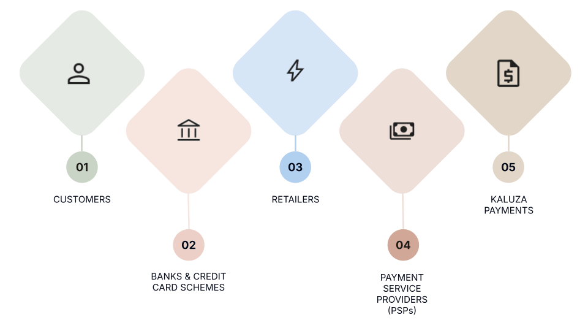
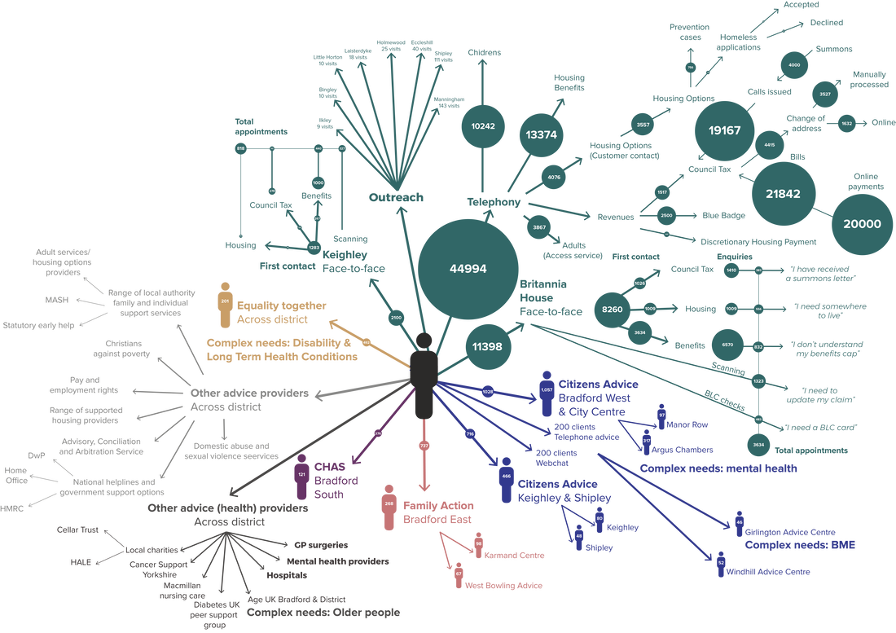
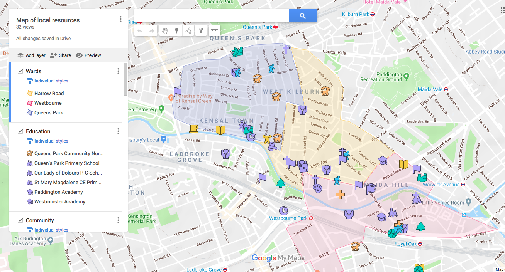
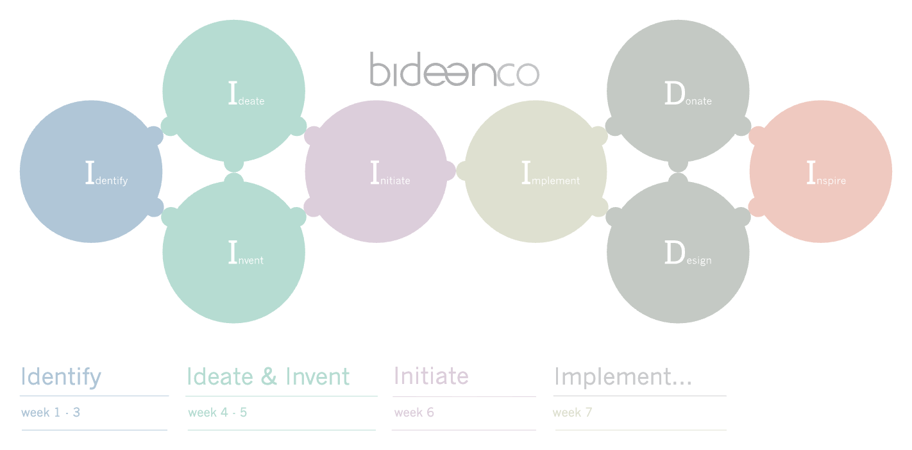
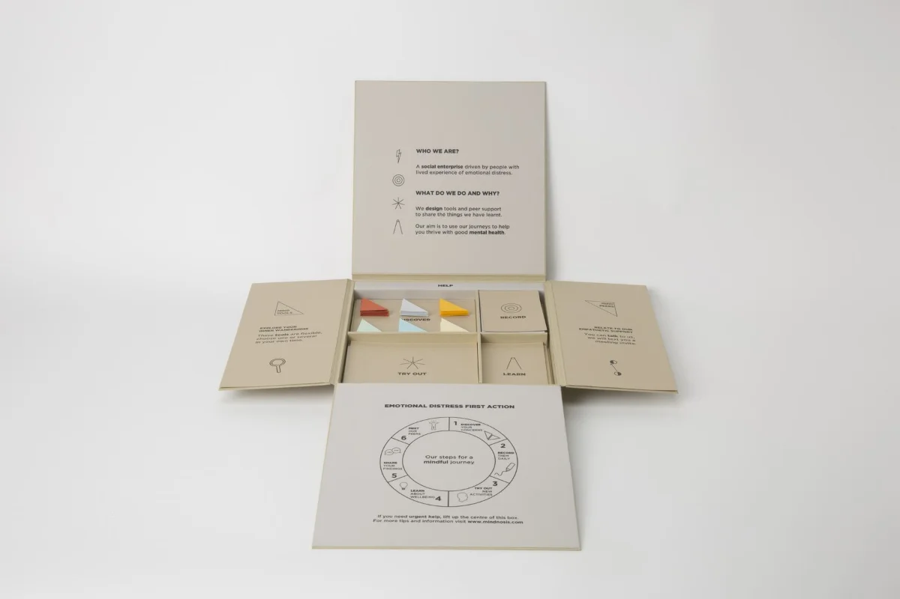

/work
Product and UX/UI design, user research and service design applied across technology, non profits and the public sector.
01
kaluza
2020–26
Six years at Kaluza, from UX designer to lead — user research, service mapping and product design across the payments platform, and the team built to run it.

02 futuregov 2019
03 uscreates 2018
04 bidean 2017–2018
/mindnosis
A self-initiated practice blending design and wellbeing since 2016. Tools, workshops and tailored sessions, built from empathy and curiosity, now available to book.
Explore Mindnosis →